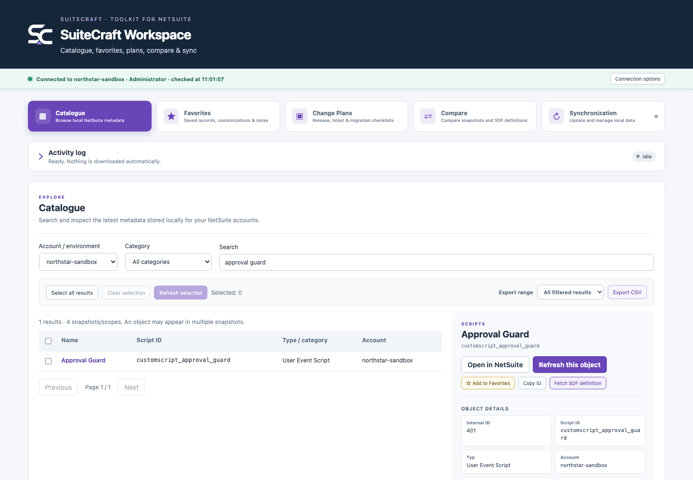
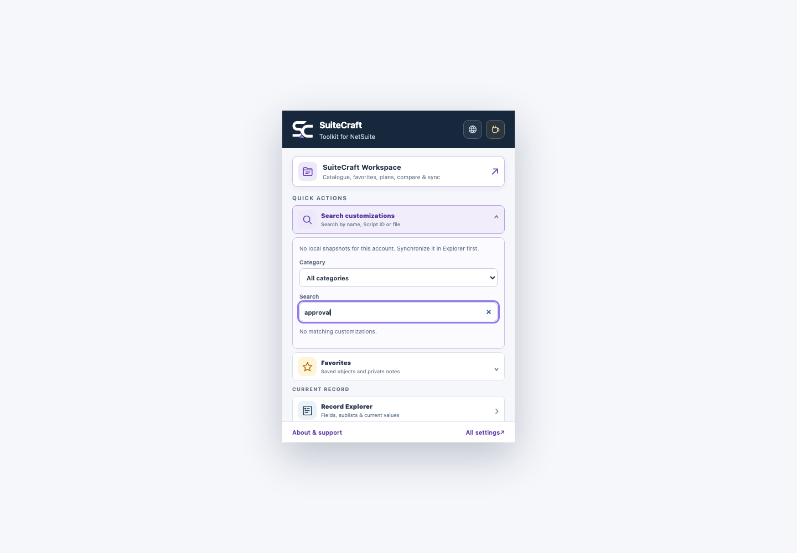

Customization Workspace
Search fields, custom records, lists, scripts, deployments and workflows from locally stored account snapshots.
- Account-scoped catalogue
- Manual synchronization
- CSV and JSON export
Built for people who work in NetSuite
SuiteCraft brings record inspection, customization discovery, local snapshots and comparison tools into one focused browser workspace.
Designed for Chrome and Brave · Runs locally in your browser
Latest development build · 0.1.0.2
SEE SUITECRAFT IN ACTION
Explore the real SuiteCraft interface running with completely fictional account data. No conceptual mockups and no client information.

ONE PRACTICAL TOOLKIT
Focused tools for administrators, developers and consultants who want to understand an account faster and repeat fewer manual steps.
Search fields, custom records, lists, scripts, deployments and workflows from locally stored account snapshots.
See what was added, removed or changed between environments or points in time, down to individual properties and SDF XML.
Inspect record body fields and sublists, filter native and custom fields, then copy or export exactly what is visible.
Save frequently used NetSuite objects with private notes and find them quickly from the popup or Workspace.
Copy or switch between System and Debugger URL variants without rebuilding the address by hand.
THE TOOLKIT GROWS
SuiteCraft is shaped by real NetSuite work and feedback from its users.
Suggest a feature →DESIGNED WITH CLIENT WORK IN MIND
SuiteCraft works through an already authenticated NetSuite browser tab. Catalogue snapshots, favorites and notes are stored locally in the browser profile and are not sent to a SuiteCraft backend.
Read the beta notesNo SuiteCraft cloud accountYour work does not depend on a separate service.
On-demand synchronizationYou decide when account metadata is refreshed.
Portable local backupsExport and restore your settings and snapshots with versioned JSON backups.
PRODUCT CHANGELOG
Major user-facing improvements are collected here. Small fixes remain part of the build without turning the changelog into a commit log.
Shared snapshot packages retain their source account, role and timestamps, while excluding settings, Favorites and private notes.
Introduced SuiteCraft Workspace, local versioned snapshots, Catalogue, Favorites, Compare, synchronization, multilingual settings and the first private beta packaging workflow.
PRIVATE BETA
SuiteCraft is still under active development. The first test build will be shared with a small group before a public store release.
INDEPENDENTLY BUILT
I built SuiteCraft around the small frustrations that add up during everyday NetSuite work. My goal is to create focused tools that fit naturally into your workflow and stay out of the way until you need them.
SuiteCraft is an independent project, developed and maintained by Damian Krolikowski.